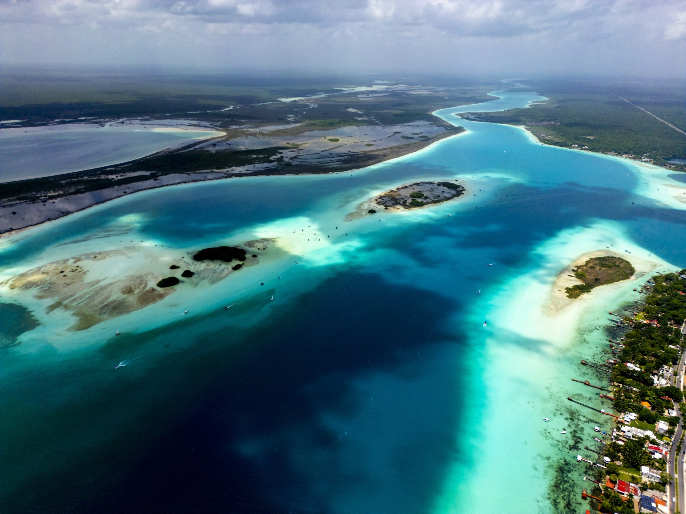
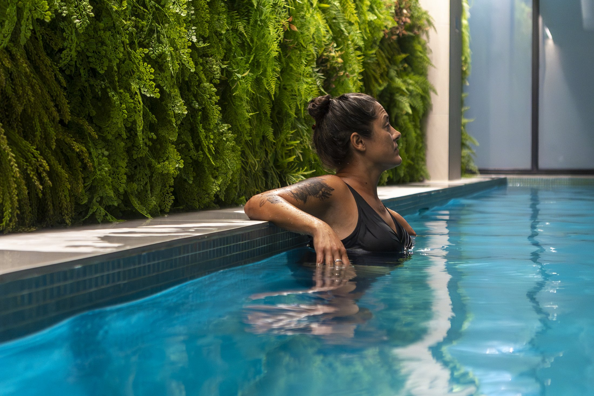
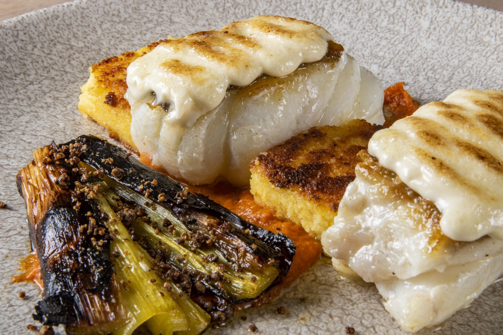

CONTENIDO PARA MÉXICO
El hotel y su entorno
Mostrar espacios, gastronomía, experiencias y paisaje con imágenes adaptadas a la identidad de cada establecimiento.

Fotografía y vídeo para mostrar vuestros hoteles, experiencias y destinos desde dentro.
EXPLORAR LA PROPUESTAUn mismo equipo para contar lo que hace diferente a cada estancia: el lugar, las personas y las experiencias que se viven allí.
Propongo crear imágenes nuevas de los hoteles que vuestro equipo quiera impulsar, conectando sus espacios y servicios con la costa, la gastronomía y las actividades de cada destino.
Las imágenes de esta página son ejemplos de mi archivo y no representan hoteles de Valentin. La producción propuesta se realizaría con vuestro equipo en los establecimientos elegidos.

Empezar con uno o varios establecimientos y construir contenido alrededor de lo que los hace singulares: una estancia en pareja, unas vacaciones en familia o una escapada activa.
La misma línea puede adaptarse a Mallorca, Menorca, Cádiz y Riviera Maya. El calendario, las localizaciones y el alcance se definen con vosotros.
Fotografía y vídeo para que vuestro equipo o agencia creen sus campañas, o una campaña completa desarrollada juntos.

Mostrar espacios, gastronomía, experiencias y paisaje con imágenes adaptadas a la identidad de cada establecimiento.

Producir escenas con el equipo y, cuando el proyecto lo requiera, modelos y colaboradores locales.

Soy Juan Aizpuru, fotógrafo y realizador. Trabajo con un equipo profesional y he fotografiado destinos como Menorca y México. Podemos desplazarnos y producir durante el tiempo que necesite cada proyecto.
La selección de hoteles, las piezas y la licencia de uso se acuerdan según vuestras necesidades. Mantengo la autoría y la propiedad del material.
CONOCER MI TRABAJOMe gustaría conocer qué hoteles y campañas queréis impulsar y explorar una colaboración.
HABLEMOS EN FITUR